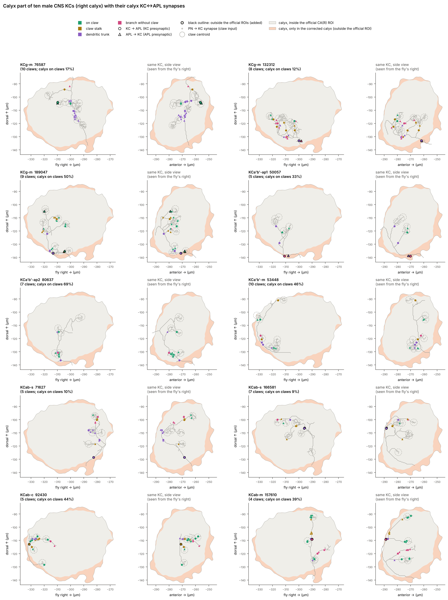

APL is the single large inhibitory neuron of each mushroom body. It receives input from Kenyon cells (KCs) and inhibits them and the projection neuron (PN) boutons. This project maps every APL synapse in four fly connectomes and asks whether that wiring explains how KC odor responses change when APL is blocked.
KCs are APL's main partner in every connectome, and most KC↔APL synapses are in the lobes, not the calyx. In the calyx, APL↔PN synapses sit almost all on PN boutons, but only 18–27% of KC→APL and 30–49% of APL→KC synapses sit on KC claws (Report 02).
Traced on ten male CNS KC skeletons, the off-claw calyx synapses sit on the shared dendritic trunk (30%), on claw stalks (21%) and on side branches without a claw (16%), a median 6 µm along the KC from the nearest PN input.
With APL blocked, more KCs respond and every odor pair becomes more similar (mean change in cosine similarity 0.18). The order of odor-pair similarities also changes: Spearman ρ between TNT and TNT3c is 0.87, about 0.92 after correcting for noise (Reports 06, 09).
A KC model with uniform APL feedback, pinned to the recordings, predicts which odor pairs gain similarity (r = 0.46 with ORN input, 0.32 with GH146; the data's noise allows at most about 0.84). Its effect is about half the data's, and it keeps the rank order almost unchanged (ρ 0.97–0.98). Per-KC synapse counts and PN boutons do not beat shuffled wiring (Reports 05, 07, 08).
APL's calyx arbor splits into sub-arbors that join only through the peduncle and lobes. Along APL, microglomeruli in the same sub-arbor are 48–69 µm apart, those in different sub-arbors 215–356 µm (Report 10).
If inhibition fades along APL's skeleton (a non-spiking APL), short-range versions predict which pairs change better than a uniform APL (best r 0.58 with ORN input, 0.53 with GH146), and the real wiring beats within-class shuffles in 3 of 4 tests. The rank order still barely changes. Confining APL to its sub-arbors adds no reordering (Reports 11, 12).
APL feedback explains part of which odor pairs become more similar when APL is blocked, and local inhibition along APL's arbor explains more of that pattern. No version so far reproduces how strongly the recordings reorder odor pairs.
Each report states its question, inputs and outputs, defines every symbol, and explains each figure in its caption. Start with Report 00 for the roadmap and glossary; reports link to one another.
Ten typical KCs from the right calyx of the male CNS, spread over the γ, α′β′ and αβ classes. Only the calyx part of each KC is drawn, on the calyx area. Pale orange marks calyx that the official calyx ROI leaves out and that the corrected calyx adds back.

| Connectome | APL bodies used | In the model |
|---|---|---|
| Hemibrain v1.2 | 425790257 (right) | Yes, right side |
| Male CNS v1.0 | 10977 (L) 10540 (R) | Yes, both sides |
| FlyWire 783 | 720575940624547622 (L) 720575940613583001 (R) | Synapse tables only |
| BANC 888 | 720575941734526507 (L) 720575941482622627 (R) | Synapse tables only |